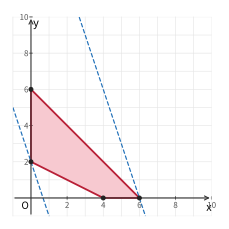
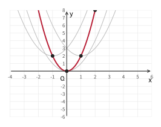
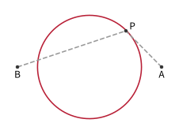
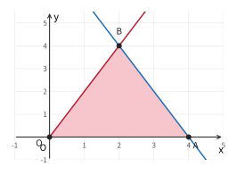
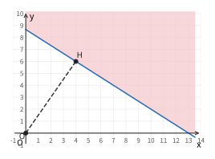
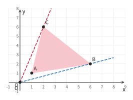

別冊章末問題の解答
1. 2点 \(A(1,\ 1)\)、\(B(7,\ 1)\) からの距離の比が \(AP:BP=1:2\) である点 \(P\) の軌跡を求めよ。
条件を座標で表す
求める点を \(P(x,y)\) とおく。\(AP:BP=1:2\) は \(2\,AP=BP\)。ルートを避けるため2乗する。
\[2^2AP^2=1^2BP^2\]\[4\{(x-1)^2+(y-1)^2\}=1\{(x-7)^2+(y-1)^2\}\]展開して整理する
\[3 x^{2} + 6 x + 3 y^{2} - 6 y - 42=0\]\(x^2\) の係数 \(3\) で割って
\[x^{2} + 2 x + y^{2} - 2 y - 14=0\]平方完成して円の形にする
\[(x+1)^2+(y-1)^2=16\]これは中心 \((-1,\ 1)\)、半径 \(4\) の円。
答え
求める軌跡は、この円全体（逆に、この円上の点は条件を満たす）。
（例題1の型）
【答案】
\[\text{中心 }(-1,\ 1),\ \text{半径 }4\ \text{の円}:\ (x+1)^2+(y-1)^2=16\]答
2. 点 \(Q\) が円 \(x^2+y^2=36\) 上を動くとき、定点 \(A(9,\ -3)\) と \(Q\) を結ぶ線分 \(AQ\) を \(1:2\) に内分する点 \(P\) の軌跡を求めよ。
連動する2点を文字でおく
\(P(x,y)\)、円上の点を \(Q(s,t)\) とおく。\(Q\) は円上なので
\[s^2+t^2=36\quad\cdots\text{①}\]\(P\) を \(Q\) で表す
\(P\) は線分 \(AQ\) を \(1:2\) に内分するから
\[x=\dfrac{2\cdot9+s}{3},\quad y=\dfrac{2\cdot-3+t}{3}\]これを \(s,t\) について解く：
\[s=3 x-18,\quad t=3 y+6\]①に代入して \(s,t\) を消す
\[\left(3 x-18\right)^2+\left(3 y+6\right)^2=36\]整理して
\[x^{2} - 12 x + y^{2} + 4 y + 36=0\]\[(x-6)^2+(y+2)^2=4\]答え
中心 \((6,\ -2)\)、半径 \(2\) の円。
（例題2の型）
【答案】
\[\text{中心 }(6,\ -2),\ \text{半径 }2\ \text{の円}:\ (x-6)^2+(y+2)^2=4\]答
3. 連立不等式（不等式）の表す領域を図示せよ。 \[(x-y)(x+y-4)>0\]
各不等式の境界線を引く
境界の式（等号にしたもの）をかく。不等号に「=」がないものは境界を含む（実線）、ないものは含まない（破線）。
各不等式の表す領域を調べる
積が正になるのは2つの因数が同符号のとき。
(i) \(x-y>0\) かつ \(x+y-4>0\)、または (ii) \(x-y<0\) かつ \(x+y-4<0\)。直線 \(y=x\)、\(x+y=4\) の2直線（破線）で平面が4つに分かれ、その向かい合う2つが領域。
共通部分を図示する
求める領域は下の図の色をつけた部分。

領域を言葉でまとめる
2直線 \(y=x\)、\(x+y=4\) で分けられた4つの部分のうち、右側と左側の向かい合う2つ（直線上は含まない）。
（例題3の型）
【答案】
\[\text{図の色の部分（実線の境界は含み、破線の境界は含まない）}\]答
4. 実数 \(x,\ y\) が \[\begin{cases}x\geqq0\\ y\geqq0\\ x+y\leqq 6\\ -x-2y\leqq -4\end{cases}\] を満たすとき、\(3x+y\) の最大値・最小値と、そのときの \((x,y)\) を求めよ。
領域を図示する
連立不等式の表す領域は、下の図の多角形（境界を含む）。

頂点の座標を求める
隣り合う境界線の交点を連立方程式で求める。頂点は
\[(4,\ 0),\ (6,\ 0),\ (0,\ 6),\ (0,\ 2)\]目的の式を \(k\) とおく
\(3x+y=k\) とおくと、これは傾き \(-3\) の直線。\(k\) は直線の切片に比例するので、この直線を平行移動して、領域と共有点をもつ範囲で \(k\) の最大・最小を調べる。
最大・最小は頂点でおこる
直線が領域を通る範囲の端は、必ず頂点を通るときである。各頂点での値を計算する。
\[(4,0):\ 12,\quad (6,0):\ 18,\quad (0,6):\ 6,\quad (0,2):\ 2\]答え
最大値 \(18\)（\((6,0)\)）、最小値 \(2\)（\((0,2)\)）。
（例題4の型）
【答案】
\[\text{最大値 }18\ (6,0),\quad \text{最小値 }2\ (0,2)\]答
5. 実数 \(x,\ y\) が \((x-3)^2+(y-1)^2\leqq 13\) を満たすとき、\(3x+2y\) の最大値・最小値と、そのときの \((x,y)\) を求めよ。
\(3x+2y=k\) とおく
これは直線。円の内部・周上の点が1つでも直線上にあるような \(k\) の範囲を求める。
\[3x+2y=k\ \iff\ 3x+2y-k=0\]共有点をもつ条件（中心との距離 \(\leqq\) 半径）
円の中心 \((3,\ 1)\)、半径 \(\sqrt{13}\)。
\[\dfrac{|3\cdot3+2\cdot1-k|}{\sqrt{3^2+2^2}}\leqq\sqrt{13}\]\[|11-k|\leqq\sqrt{13}\cdot\sqrt{13}=13\]\[-2\leqq k\leqq 24\]最大値・最小値
\[\text{最大値 }24,\quad \text{最小値 }-2\]そのときの \((x,y)\)
最大・最小になるのは直線が円に接するとき。接点は、中心から法線方向 \((3,\ 2)\) に半径だけ進んだ点。
\[(x,y)=(3,\ 1)\pm\sqrt{\dfrac{13}{13}}\,(3,\ 2)=(3,\ 1)\pm1(3,\ 2)\]\[\text{最大：}(6,\ 3),\qquad \text{最小：}(0,\ -1)\]（例題5の型）
【答案】
\[\text{最大値 }24\ (6,3),\quad \text{最小値 }-2\ (0,-1)\]答
6. 放物線 \(y=x^2-2kx+3k^2\) の頂点は、\(k\) がすべての実数値をとって変化するとき、どんな曲線を描くか。その方程式を求めよ。
頂点の座標
\[y=x^2-2kx+3k^2=(x-k)^2+2k^2\]
頂点 \((x,y)=(k,\ 2 k^{2})\)。
\(k\) を消去
\(x=k\) より \(k=x\)。これを \(y\) に代入。
\[y=2 x^{2}\]
軌跡
\(k\) はすべての実数をとれるので、放物線全体。
（例題6の型）
【答案】
\[y=2 x^{2}\]答
7. 2点 \(A(5,0),\ B(-5,0)\) に対して \(PA^2+PB^2=76\) をみたす点 \(P\) の軌跡を求めよ。
P の座標をおく
\(P(x,y)\)。
\[PA^2+PB^2=(x-5)^2+y^2+(x+5)^2+y^2=2x^2+2y^2+50\]条件
\[2x^2+2y^2+50=76\ \Longrightarrow\ x^2+y^2=13\]

軌跡
原点中心、半径 \(\sqrt{13}\) の円。
（例題7の型）
【答案】
\[x^2+y^2=13\]答
8. 連立不等式 \(y\geqq0,\ y\leqq 2x,\ y\leqq -2x+8\) の表す領域の面積を求めよ。
境界線と頂点
\(y=2x\) と \(y=-2x+8\) の交点 \(B(2,\ 4)\)、第2の直線と \(x\) 軸の交点 \(A(4,\ 0)\)。\[2x=-2x+8\ \Rightarrow\ 4x=8\ \Rightarrow\ x=2,\ \ y=4\]
第2の直線で \(y=0\)：
\[0=-2x+8\ \Rightarrow\ x=4\]原点 \(O(0,\ 0)\)（\(y=2x\) と \(y=0\) の交点）。三角形 \(OAB\) の領域。

底辺と高さ
底辺 \(OA=4\)、高さ \(4\)。
面積
\[\dfrac12\cdot4\cdot4=8\]（例題8の型）
【答案】
\[8\]答
9. \(x\geqq0,\ y\geqq0,\ 2x+3y\geqq26\) のとき、\(x^2+y^2\) の最小値を求めよ。
領域と図
\(2x+3y\geqq26\)（右上側）、\(x\geqq0,\ y\geqq0\)。\(x^2+y^2\) は原点との距離の2乗。

最小の点
原点から直線への垂線の足 \(H\) が領域内にあるので、最小値は距離の2乗。
\[\left(\dfrac{|26|}{\sqrt{2^2+3^2}}\right)^2=\dfrac{676}{13}=52\]最小値
\((x,y)=\left(4,\ 6\right)\) のとき。
（例題9の型）
【答案】
\[52\]答
10. 3点 \(A(1,1),\ B(6,2),\ C(2,6)\) を頂点とする三角形の周および内部を点 \((x,y)\) が動くとき、\(\dfrac yx\) の最大値と最小値を求めよ。
傾きとみる
\(\dfrac yx\) は原点と点 \((x,y)\) を結ぶ直線の傾き。

頂点で調べる
A：\(1\)、B：\(\dfrac{1}{3}\)、C：\(3\)。
最大・最小
傾きは頂点で最大・最小になる。
\[\text{最大 }3,\qquad \text{最小 }\dfrac{1}{3}\]（例題10の型）
【答案】
\[\text{最大 }3,\ \text{最小 }\dfrac{1}{3}\]答